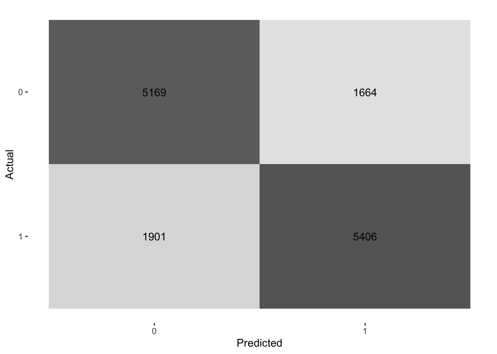
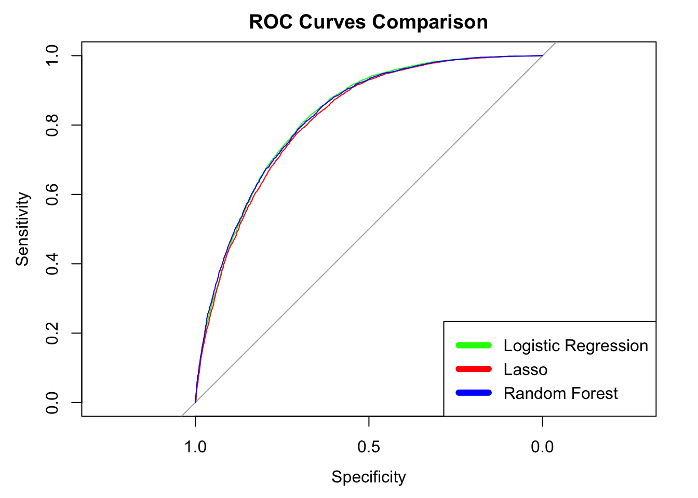

First, we call back all of the model results from the methods section. More specifically, this includes each model’s predicted probabilities, as well as their error rates.
# Import all libraries
library(tidymodels)
library(pROC)
library(dplyr)
# Call back the saved probabilities and ROCs for each model
# Load data for logistic regression model
log_model <- readRDS("log_model.rds")
log_probs <- readRDS("log_probs.rds")
# load data for lasso model
lasso_model <- readRDS("lasso_model.rds")
lasso_probs <- readRDS("lasso_probs.rds")
# load data for random forest model
rf_fit <- readRDS("rf_model.rds")
rf_probs <- readRDS("rf_probs.rds")
# load ROC values
log_roc <- readRDS("log_roc.rds")
lasso_roc <- readRDS("lasso_roc.rds")
rf_roc <- readRDS("rf_roc.rds")
# Load accuracy values
log_acc <- readRDS("log_acc.rds")
rf_acc <- readRDS("rf_acc.rds")
lasso_acc <- readRDS("lasso_acc.rds")The table below reports the AUC and accuracy values for logistic, lasso logistic, and random forest classification models. The similarity of results across all models suggests that diabetes prediction is promising and feasible. An AUC above 0.80 means that the model has over an 80% probability of assigning a higher predicted risk to a random individual with diabetes than to a random individual without diabetes. Given that random prediction would yield an AUC of 0.50, all models perform much better than random guessing. Despite this, an accuracy of around 75% might not meet medical standards given the gravity of making decisions that can alter a patient’s life. However, given that the dataset had a 50/50 split of diagnoses, achieving an accuracy of 75% is still noteworthy. For example, if only 5% of people in the dataset had diabetes, the model could achieve 95% accuracy by simply classifying everyone as not having diabetes. Since each class was balanced, an accuracy of 75% highlights a strong relationship between the health variables in the dataset and having diabetes. With that being said, we were very surprised that the random forest model did not produce significantly higher results than the logistic models.
In fact, the model produced about the same AUC and accuracy metrics as both logistic regression models (AUC=0.824, Accuracy = 0.750). Although the similarities across models can be used as validating evidence for our results, we were surprised that the random forest did not yield better results, especially since we optimized for hyperparameter combinations.Perhaps this suggests that these logistic models are very good at predicting diabetes risk already, and that maybe there is a limit to how accurately the model can perform.
# Source: https://gt.rstudio.com/articles/gt.html
# Make a model comparison table
library(gt)
# make table with AUC and Accuracy for all models
tibble(
Model = c("Logistic Regression", "Lasso", "Random Forest"),
AUC = round(c(as.numeric(auc(log_roc)),
as.numeric(auc(lasso_roc)),
as.numeric(auc(rf_roc))), 3),
Accuracy = round(c(log_acc, lasso_acc, rf_acc), 3)
) |> gt()| Model | AUC | Accuracy |
|---|---|---|
| Logistic Regression | 0.824 | 0.748 |
| Lasso | 0.817 | 0.741 |
| Random Forest | 0.826 | 0.750 |
Additionally, we wanted to explore the error rate metrics for the logistic regression model. We chose the logistic regression model since it produced both the highest AUC and accuracy. The confusion matrix below highlights how many True Positives, False Positives, False Negatives, and True Negatives the model produced. As is shown, the model correctly classified 10,575 total patients (out of 14,140), and incorrectly classified 3,565 patients.
More specifically, False Positives refer to instances when the model predicted “diabetes” when the patient actually did not have diabetes. On the other hand, False Negatives refer to the instances when the model predicted “no diabetes” when the patient actually did have diabetes. The False Positive Rate (FPR) is 26.05%, and the False Negative Rate (FNR) is 24.35%. From a social perspective, we believe that the cost of a false negative is greater than that of a false positive, since it is worse to tell someone they are healthy when they are not, especially when lifestyle interventions can significantly improve existing conditions. Additionally, we imagine this model would serve as an initial screening, so false positives would simply require additional testing.
# Source: https://yardstick.tidymodels.org/reference/conf_mat.html
data <- read.csv("/Users/brigettemahoney/Desktop/diabetes_binary_5050split_health_indicators_BRFSS2015.csv")
data$Diabetes_binary <- as.factor(data$Diabetes_binary)
set.seed(123)
splits <- initial_split(data, prop = 0.8, strata = Diabetes_binary)
test_data <- testing(splits)
# predict using logistic regression
log_preds <- predict(log_model, new_data = test_data)
# make the confusion matrix
conf_mat(
data = test_data %>% bind_cols(log_preds),
truth = Diabetes_binary,
estimate = .pred_class
) %>%
autoplot(type = "heatmap") +
labs(x = "Predicted", y = "Actual")
# ROC Curves To better visualize each model’s performance, we plotted the ROC curve for all three. The Receiver Operating Characteristic (ROC) curve depicts each model’s ability by plotting its performance across all classification thresholds. To do so, it plots the TPR (Sensitivity) against the FPR (1- Specificity) for all thresholds. Also, the AUC measures the total area under the ROC curve, whose numerical values are reported in the first table above. As is shown graphically and in the table above, all models perform almost identically, suggesting that the results are robust across models.# Source: https://rpubs.com/zachbanasik/1302729
# plot all curves on one graph
plot(log_roc, col = "green", lwd = 3, main = "ROC Curves Comparison")
plot(lasso_roc, col = "red", lwd = 3, add = TRUE)
plot(rf_roc, col = "blue", lwd = 3, add = TRUE)
legend("bottomright",
legend = c("Logistic Regression", "Lasso", "Random Forest"),
col = c("green", "red", "blue"),
lwd = 6)
# Odds Ratio Table Lastly, we created a table listing the odds ratio, 95% confidence interval, and p-value for each coefficient in the logistic regression. Since logistic regression computes the log odds of having diabetes, the “exponentiate = TRUE” function converts log odds to an odds ratio, which allows for greater interpretability.High blood pressure (HighBP), high cholesterol (HighChol), and worse general health (GenHlth) were associated with 2.08x, 1.78x, and 1.8x greater odds of diabetes, respectively. Furthermore, the model suggests that having cholesterol checked increases the odds of developing diabetes by 3.87x. However, this is most likely due to detection bias: unhealthy people are more likely to need a reason to get their cholesterol checked.
On the other hand, heavy alcohol consumption (HvyAlcoholConsump), higher income, and higher education levels were all associated with lower odds of developing diabetes. While the last two make intuitive sense, heavy alcohol consumption does not. One interpretation is that younger people (college students, etc.) are heavier drinkers but are not yet age susceptible to diabetes.
Lastly, only 5 out of 21 total features did not produce statistically significant results at the p=0.05 threshold, indicating that there are many health factors that affect diabetes prediction.
# Source:https://statsandr.com/blog/binary-logistic-regression-in-r/
# Load package
library(gtsummary)
# print table with odds ratio, p-value, and confidence intervals
log_glm <- extract_fit_engine(log_model)
tbl_regression(log_glm, exponentiate = TRUE)| Characteristic | OR | 95% CI | p-value |
|---|---|---|---|
| HighBP | 2.09 | 2.00, 2.18 | <0.001 |
| HighChol | 1.81 | 1.74, 1.89 | <0.001 |
| CholCheck | 3.70 | 3.11, 4.42 | <0.001 |
| BMI | 1.08 | 1.08, 1.08 | <0.001 |
| Smoker | 0.99 | 0.95, 1.03 | 0.7 |
| Stroke | 1.18 | 1.08, 1.30 | <0.001 |
| HeartDiseaseorAttack | 1.29 | 1.21, 1.37 | <0.001 |
| PhysActivity | 0.97 | 0.93, 1.02 | 0.2 |
| Fruits | 0.96 | 0.92, 1.00 | 0.042 |
| Veggies | 0.94 | 0.89, 0.99 | 0.013 |
| HvyAlcoholConsump | 0.47 | 0.42, 0.52 | <0.001 |
| AnyHealthcare | 1.08 | 0.98, 1.20 | 0.12 |
| NoDocbcCost | 1.03 | 0.96, 1.11 | 0.4 |
| GenHlth | 1.79 | 1.75, 1.84 | <0.001 |
| MentHlth | 1.00 | 0.99, 1.00 | 0.004 |
| PhysHlth | 0.99 | 0.99, 0.99 | <0.001 |
| DiffWalk | 1.14 | 1.08, 1.21 | <0.001 |
| Sex | 1.32 | 1.27, 1.38 | <0.001 |
| Age | 1.16 | 1.15, 1.17 | <0.001 |
| Education | 0.97 | 0.95, 1.00 | 0.019 |
| Income | 0.94 | 0.93, 0.95 | <0.001 |
| Abbreviations: CI = Confidence Interval, OR = Odds Ratio | |||